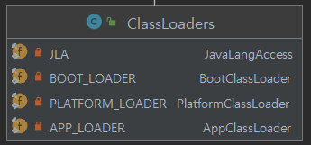
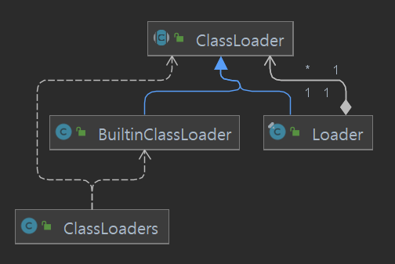

JAVA CORE - JVM
– JAVA CORE –
JVM 구조 및 분석 (작성중)
JVM
-
Java Virtual machine
- 바이트코드(.class)를 OS에 특화된 코드로 변환(인터프리터, JIT)하여 실행.
- JVM은 벤더사마다 다르게 구현되어있다. (오라클, 아마존 등)
- 특정 플랫폼에 종속적이다
JVM 구조
- 클래스로더
- 로딩 -> 링크 -> 초기화
- .class에서 바이트코드를 읽고 메모리에 저장한다.
- 메모리
- 스택,PC,힙,메소드
- 실행엔진
- 인터프리터, JIT컴파일러, GC
ClassLoader 예제
- java프로젝트를 시작하고, class를 로딩한 주체를 출력해보자
public static void main(String[] args) {
System.out.println(Main.class.getClassLoader());
System.out.println(Main.class.getClassLoader().getParent());
System.out.println(Main.class.getClassLoader().getParent().getParent());
}
결과 출력
jdk.internal.loader.ClassLoaders$AppClassLoader@2437c6dc
jdk.internal.loader.ClassLoaders$PlatformClassLoader@7c30a502
null
- 클래스로더는 계층구조로 되어있다.
- APP -> PLATFORM -> BOOT 순서로 계층구조로 되어있다.
- BOOT의 경우, native code로 작성되어 null로 조회된다고 한다.

- ClassLoaders.java에 클래스로더 맴버변수를 확인할 수 있다,

- ClassLoader 계층구조